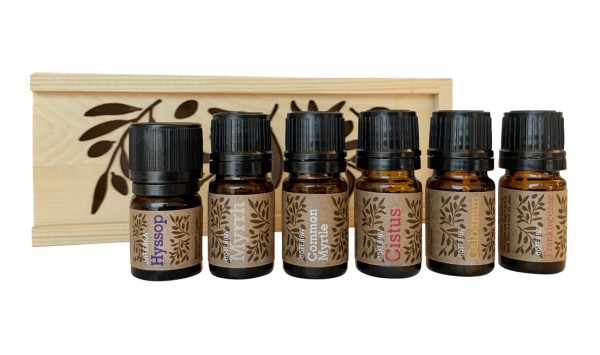

My Doterra.
Сайт для ознакомления с производителем высококачественного масла.
>
Главная
Эфирные масла
Уход за телом
Рецептура
Вакансии
О фирме "Дотерра"
От шампуни до ароматерапии.
Наборы масел.

И средства гигиены.